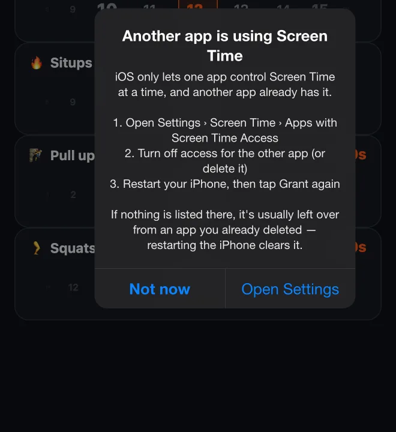
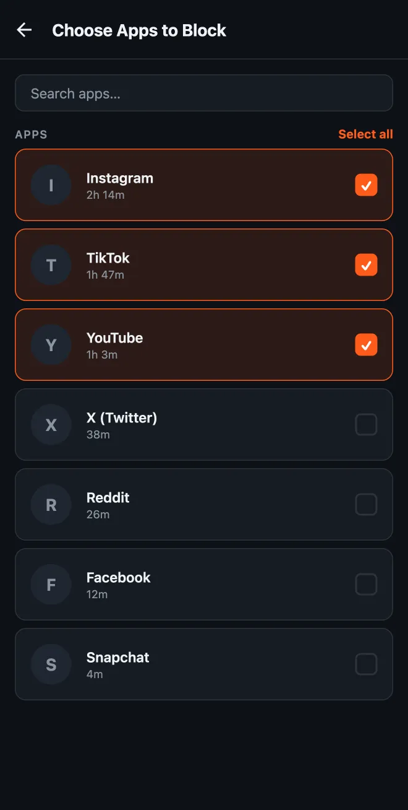

3 cosas que me gustaría que Apple arreglara en la Screen Time API
Hago HonorFit, un bloqueador de apps en el que te ganas el tiempo de pantalla haciendo flexiones (sistema de honor, sin cámara). Es la misma app en iPhone y Android: la misma idea y, en su mayor parte, el mismo código. ¿Y la verdad? La versión de Android es más cómoda de usar.
No es porque Android bloquee mejor las apps. En la parte del bloqueo, la Screen Time API de iOS es muy sólida. Es porque iOS te encierra en tres cosas concretas, y ninguna parece estar ahí para proteger a los usuarios. Así que aquí va mi lista, con lo que le pediría a Apple. Intenté quedarme con cosas que no le costarían privacidad a nadie.
(Si quieres la versión técnica de cómo construir sobre esta API, la escribí aparte: lo que la documentación de Apple no te cuenta.)
1. Solo puedes tener una app de Tiempo de uso a la vez
Digamos que ya usas Brick, Opal o one sec y quieres probar también HonorFit. En iPhone no puedes. Cuando la segunda app pide acceso a Tiempo de uso, iOS ni siquiera muestra la solicitud de permiso. Simplemente devuelve un error que dice que Family Controls solo está disponible para una aplicación a la vez. Yo mismo he visto ese error, y a otros desarrolladores también les pasa.
Para cambiar, tienes que ir a Ajustes › Tiempo de uso › Apps con acceso a Tiempo de uso, desactivar la otra app y, a veces, reiniciar el teléfono. Ahora HonorFit detecta el error y guía a la gente por esos pasos, porque el mensaje de error tal cual no le dice nada a una persona normal.

Lo raro es esto: cuando Apple presentó este tipo de autorización en la WWDC22, dijo que, a diferencia de la autorización de control parental, la autorización individual puede usarla cualquier número de apps en un dispositivo. Hoy no pasa eso, y no encontré esto documentado en ningún lado.
Por qué esto no les conviene a los usuarios: la gente combina herramientas. Alguien podría usar un Brick para sesiones de concentración estrictas en el trabajo y HonorFit para ganarse el scroll de la noche. Apple ya tiene una regla para combinar restricciones: cuando varios ManagedSettingsStore configuran lo mismo, en palabras de Apple, “the most restrictive setting always wins” (siempre gana la configuración más restrictiva). Hacer lo mismo entre apps permitiría usar las dos, y así un teléfono solo puede terminar más bloqueado, nunca menos.
2. El selector de apps es torpe y las apps no pueden personalizarlo
En iPhone, elegir qué apps bloquear significa usar el FamilyActivityPicker de Apple. Es una hoja del sistema que la app no puede cambiar, salvo por una línea de texto de encabezado y de pie. Se abre en una lista de categorías (Redes sociales, Juegos, Entretenimiento...), y tienes que entrar en una categoría para encontrar las apps en sí. En Android, la lista la construyo yo, así que HonorFit muestra tus apps instaladas ordenadas según cuánto usaste cada una en las últimas 24 horas.


Dos cosas me molestan del de iOS:
- Es muy fácil bloquear una categoría entera sin querer. Tocas la fila de la categoría en lugar de abrirla y acabas de elegir todas sus apps, incluidas las que instales más adelante. Para muchas apps eso nunca es lo que quieres. Quieres Instagram y TikTok, no «Redes sociales».
- No puedes ver qué apps se están comiendo tu día. El motivo por el que alguien abre un bloqueador de apps es «paso demasiado tiempo con el teléfono». El selector es justo el momento en que esa persona decide qué bloquear, y no le da ni un dato sobre a dónde se le va el tiempo. Tu iPhone sabe exactamente cuánto tiempo pasaste en cada app (está ahí mismo en Ajustes), pero el selector no lo muestra.
Esto no costaría nada de privacidad. El selector lo dibuja iOS en su propio proceso. La app nunca ve lo que hay dentro, solo tokens opacos de lo que hayas elegido. HonorFit literalmente no puede saber qué apps elegiste. Así que iOS podría mostrar los tiempos de uso dentro del selector y la app seguiría sin enterarse de nada. Apple ya hace algo parecido con las extensiones DeviceActivityReport, que muestran tu uso dentro de un sandbox que la app no puede leer.
- Una opción del selector para elegir categorías enteras o solo apps, para que un bloqueador pueda ofrecer una lista solo de apps sin selecciones de categoría por accidente (y ocultar los sitios web si no los usa).
- Una opción para ordenar por tiempo de pantalla medido, y mostrarlo, junto a cada app, dibujado por iOS para que la app nunca vea los números.
3. No puedes ver una cuenta atrás precisa del tiempo que te queda
En HonorFit, tu tiempo ganado solo se descuenta mientras estás de verdad en una app bloqueada. Así que lo obvio es mostrar una cuenta atrás: «quedan 12:34», que baja mientras haces scroll y se detiene cuando sales.
En Android es fácil. El servicio en segundo plano de HonorFit revisa cada segundo qué app está en pantalla, y la notificación usa el temporizador de cuenta atrás que trae Android, así que el panel de notificaciones lo vuelve a dibujar solo cada segundo. Bajas el panel y ves exactamente cuánto tiempo te queda, al segundo.
En iPhone no se puede, y esta es la razón:
- iOS nunca le avisa a la app cuando abres o cierras una app bloqueada. Lo único que recibes son eventos del tipo «ya se acumuló tanto uso». HonorFit configura uno por cada 15 segundos de uso, y se entregan a una extensión en segundo plano que actualiza la notificación.
- Una notificación normal no puede hacer la cuenta atrás sola, así que lo mejor que puede hacer HonorFit es cambiar el texto cada vez que llega un evento. Por eso la notificación de iPhone dice «~12:30 restantes» con la tilde (~): avanza a saltos de 15 segundos.
- Además, esos eventos no siempre llegan a tiempo. En iOS 26 los he visto llegar tarde, o varios a la vez.
- Las Actividades en vivo sí pueden hacer la cuenta atrás solas, pero no se pueden pausar. Nada le dice a la app que saliste de Instagram, así que una Actividad en vivo seguiría corriendo mientras el teléfono está en la mesa, y eso estaría mal.
Así que los usuarios de iPhone ven una estimación aproximada y los de Android, el número real.
DeviceActivity pueda controlar una cuenta atrás que dibuje el propio iOS: en una notificación, una Actividad en vivo o el shield, y que corra solo mientras las apps monitoreadas están en pantalla. iOS ya mide ese uso al segundo, así que podría mostrar el tiempo sin darle nada nuevo a la app. Incluso unos simples callbacks de «app bloqueada abierta / cerrada» para la extensión del monitor resolverían casi todo.Eso es todo
Para ser justo con Apple, el modelo de privacidad aquí es muy bueno. La app nunca sabe qué bloqueaste ni cuánto lo usas, y no me gustaría que eso cambiara. Ninguna de las tres cosas de arriba lo cambiaría. Solo permitirían que las apps de iPhone fueran tan útiles como ya lo son las versiones de Android.
Si tú también construyes sobre Tiempo de uso y quieres alguna de estas cosas, por favor repórtala en Feedback Assistant. Por lo que entiendo, los reportes duplicados son la forma de que algo se note. Y si solo quieres probar la app, HonorFit es gratis en iPhone y Android. ¡Ojalá a alguno de ustedes le guste!